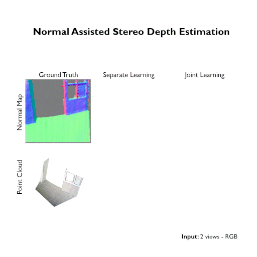

Uday Kusupati1
Shuo Cheng2
Rui Chen3
Hao Su2
1 The University of Texas at Austin 2 University of California San Diego 3 Tsinghua University
IEEE Conference on Computer Vision and Pattern Recognition (CVPR) 2020
Accurate stereo depth estimation plays a critical role in various 3D tasks in both indoor and outdoor environments. Recently, learning-based multi-view stereo methods have demonstrated competitive performance with limited number of views. However, in challenging scenarios, especially when building cross-view correspondences is hard, these methods still cannot produce satisfying results. In this paper, we study how to enforce the consistency between surface normal and depth at training time to improve the performance. We couple the learning of a multi-view normal estimation module and a multi-view depth estimation module. In addition, we propose a novel consistency loss to train an independent consistency module that refines the depths from depth/normal pairs. We find that the joint learning can improve both the prediction of normal and depth, and the accuracy and smoothness can be further improved by enforcing the consistency. Experiments on MVS, SUN3D, RGBD and Scenes11 demonstrate the effectiveness of our method and state-of-the-art performance.